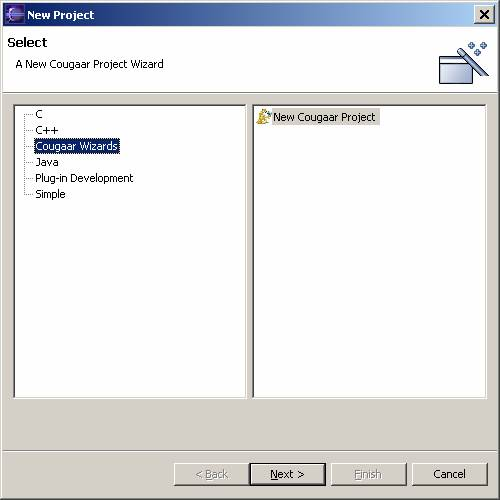
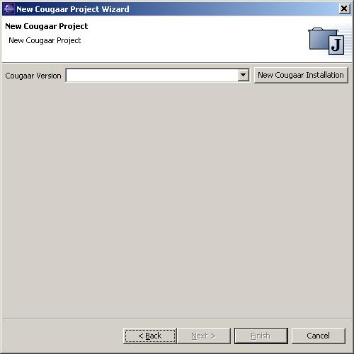
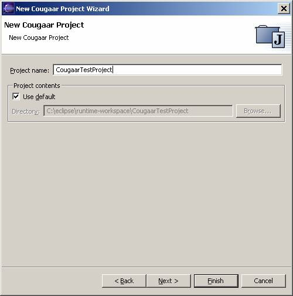
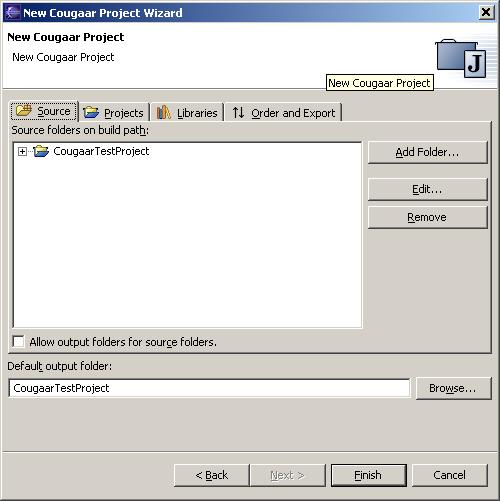
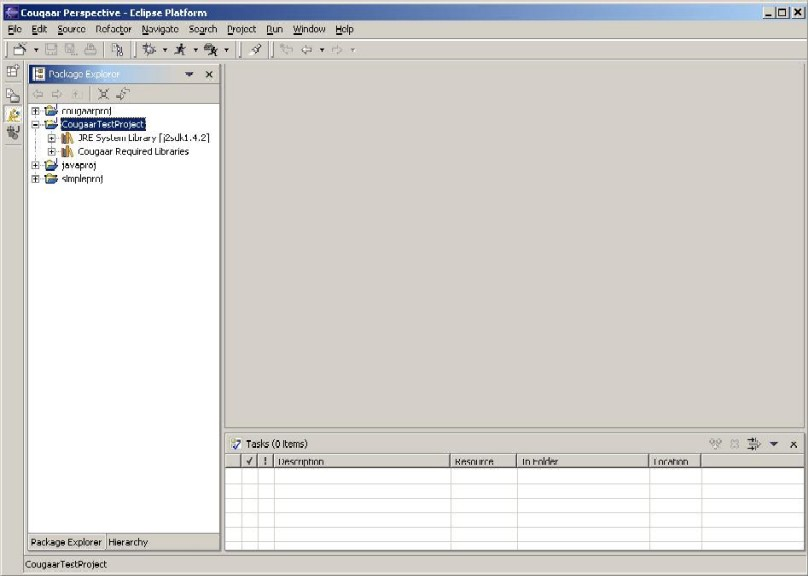

CougaarIDE Use:
Creating a Cougaar Project
Select File->New->Project from
the Eclipse workbench. This will launch the new project wizard
selection page.

Select the "Cougaar Wizards" on the right and then select the "New
Cougaar Project" option then press ‘Next’.
This will present you with a page that allows you to set the Cougaar
installation you want to use for the new project.

Select the version you want to use from the drop down list, or press
the "New Cougaar Installation" button, if you haven't configured the
version you want to use yet (if you create a new one, you can follow
the directions on managing
Cougaar installations for this step), then press "Next".
This will take you to a page that lets you enter
a project name and select the location to store the project. If you already have existing source (that is
not already a Eclipse project), you use the
project
contents option to load existing source and folders.

Click Next when Complete.
The next series of tabs are exactly the same as a standard
Java project in Eclipse. You do NOT need
to set up your Classpath at this time for
the
standard Cougaar jars. This will be
handled by CougaarIDE. You do, however,
need to add any third party jars not part of the normal Cougaar project. When you have finished setting up these tabs
click Finish.

This will attempt to build the project and add it to your
workspace. If you are not in the Cougaar Perspective, you will be
asked to switch to it.
